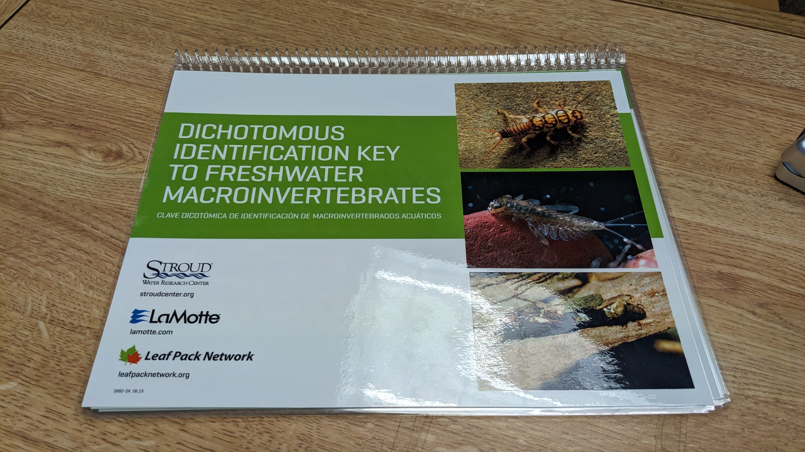

Wade The River - What We Found In The Poudre River
Sept 17, 2023
On September 2, we gathered at the Wade the River event. We explored the incredible biodiversity of tiny aquatic life living within the Poudre. With nets and magnifying glasses in hand, we ventured into the depths of one of Colorado's most iconic rivers, armed with our curiosity and excitement to discover what secrets were hidden beneath its murky waters.
By day's end, our Shadow Scopes were filled with images of squiggly specimens ranging from strange larvae to tiny worms as well as curious critters like leeches. The Shadow Scope microscope gave us an unprecedented peek at this smaller world. It allowed us to openly marvel at these unique forms of life seldom seen in such detail by human eyes!
The Beauty Of The Poudre River
The beauty of aquatic life goes beyond its stunning presence - it plays a significant role in our ecosystem. Exploring aquatic life allows us to gain insights into the behavior and traits of various aquatic creatures. Recently, my family and I participated in the Wade the River event, which took place in our city and allowed me to explore the aquatic life thriving in the nearby river.
This blog post is a detailed account of our journey into the river, the specialized tools we used to examine aquatic life, and a simple guide to proper sampling techniques.
How The Day Started
Our journey through the river started with a walk along the trail near Lee Martinez Park. After our five-minute walk, we were quickly greeted by a friendly Wade the River staff member, who asked if we were there for the event.
My family and I were given a few of the tools (magnifying glass, spoon) we needed to get started. We were given a nice explanation of how to begin sampling. The specialized magnifying glass was an eye-opener, allowing us to view aquatic life barely visible to the naked eye.
One significant benefit of using the magnifying glass was how close it brought aquatic life to us; for the first time, we saw some of the details of creatures previously unknown to my family. The magnifying glass was so helpful that we could, for the most part, identify the creatures and even study their movements and behaviors.
Using Horseshoe Nets
We used horseshoe-shaped nets to trap stirred-up particles to improve our sampling methods. The horseshoe-shaped net was a game-changer, and it helped us to capture almost every little creature that stirred up in the water.
The nets were perfect for grabbing little creatures, allowing us to examine them more closely. The process illuminated how the creatures functioned and how they are a significant part of the river ecology that we take for granted.
Using a Spoon And Syringe To Gather The Creatures
Next was identifying and isolating tiny creatures with a spoon and suction syringe. From little water bugs, worms, leeches, and fly larvae, we saw creatures we never knew or had forgotten existed.
Using a spoon and suction syringe was a unique experience for us as we had to observe the creatures first to recognize the best spot to retrieve them without causing any harm. Isolating the creatures with a spoon and syringe allowed us to understand the river's biodiversity.
Using The Shadow Scope
The Shadow Scope, a specialized microscope, served as our window into the unseen world of the river depths. CSU researchers provided expert guidance on this innovative tool, allowing us to capture excellent videos of our river samples.
With their help, we recorded fascinating images of insect larvae, flatworms, and mayfly larvae. The Shadow Scope brought the river's microcosm to life, transforming abstract concepts into tangible pictures and video clips.
Videos Taken With The Shadow Scope
The videos below were taken with our Shadow Scopes at the event. We’ve listed a few here, but you can find the full list from the link below. You’ll also be able to access them from our website soon!
The presence of all these flies indicates the river is clean and healthy. Touching on the river’s health, we learned at the event that the City of Fort Collins Water Team routinely checks on the Poudre River’s health each month at over ten different locations in town! In addition to all these flies, we also discovered many midge larvae (bloodworms) and planarians (flatworms), known for being more robust than fly larvae.
We also got a chance to find a few varieties of microscopic organisms! We spotted ciliates, ostracods, daphnia (water fleas), and rotifers. The participants were even lucky enough to find a tiny fish larva, likely from a trout.
Newfound Knowledge of Nature
My family and I gained valuable knowledge about nature and its intricate workings from the event. The event provided clear, tangible examples of ecological concepts that we often only read about.
Most importantly, the event underscored the significance of continuous learning and exploration, reminding us that nature has endless lessons to teach us. My children absolutely loved being in the water and finding all sorts of creatures they had never seen before. Seeing them up close was even more exciting!
Admiration for the Poudre River's Health and Biodiversity
The diversity of aquatic life in the river was nothing short of awe-inspiring. From minuscule microorganisms to larger species such as flatworms and stoneflies, the river teemed with a vibrant array of lifeforms, each vital in maintaining the river's ecosystem.
This experience underscored the importance of preserving and respecting our natural habitats. Each organism in the Poudre River had a purpose, contributing to the ecosystem's delicate balance.
Participating in the 'Wade the River' event was an educational experience and a testament to the extraordinary beauty of nature and the marvels of aquatic life.
Reflecting on Our Day At The Poudre River
Reflecting on the 'Wade the River' event, it was an immersive journey into the heart of nature, offering profound insights into the aquatic life that thrives in our local river. The event also highlighted the role of community involvement in ecological research, encouraging an active dialogue between the public and the scientific community. The hands-on experience, the valuable knowledge gained, and the deep appreciation for nature fostered by the event are the key takeaways that will continue to resonate with me and my family. Through events like these, we learn about our environment and understand our role in preserving and protecting it for future generations.
We encourage all our participants to feel free to share their videos online and add the hashtag #CSUShadowScope so everyone can see it!
From everyone at the Shadow Scope team, we want to give special thanks to the City Of Fort Collins team and all the volunteers of Wade the River who made this unique learning event possible!
Dive Into the Mysterious World Within the Poudre River at the Wade The River Event!
Aug 30, 2023
The Shadow Scopes are Ready for Learning and Fun this September 2nd
With summer coming to an end and the new school year just beginning, it's time to make the most of the last few days of sunshine. And what better way to do that than by immersing yourself in nature and discovering all it has to offer?
On September 2nd, you can join us at the Wade The River event in Lee Martinez Park, where we'll explore the Cache La Poudre River and all the fantastic creatures that call it home!
When Does it Start?
The event runs from 2:30 PM to 5:00 PM, and all ages are welcome to participate.
The Shadow Scope team will be on-site to guide participants in finding and identifying the tiny organisms that live in the river. This event is an excellent opportunity for children and adults alike to learn about science and explore the beautiful natural environment surrounding us here in Fort Collins.
Our Shadow Scopes Are Ready To Go!
What's Happening at the Event?
Participants will be using dipping nets and other equipment, all provided on-site, to find and identify aquatic larvae, invertebrates, aquatic worms, leeches, dragonfly larvae, and water skipper larvae.
The Shadow Scope, a handy tool that allows you to see the world up close and personal, will be used to examine some of the smaller organisms found in the river water. You'll be amazed at the diversity of life hiding just below the river surface!
If you're worried about not being an expert in biology, don't be! A team of biologists on site will be more than happy to help you identify your finds and answer any questions you may have. In addition, you'll learn about the importance of the Cache La Poudre River to the area and how we can protect this valuable ecosystem for future generations.
Where Can I Find the Wade the River Event?
The event will be held on the Poudre Trail. To get there, park at the tennis courts at Lee Martinez Park and follow the paved trail west until you come to a small beach on the north side of the trail. We highly recommend registering, but it's not required.
Only registered participants will be notified if the program is canceled or postponed, so make sure to sign up to avoid missing out on this unique opportunity!

We’ll be using this identification chart to help participants identify what they’ve found in the Cache La Poudre River!
Are You Ready for a Learning Adventure?
If you're headed to the Shadow Scope program, make sure to pack appropriately! With the river as our playground, you'll want to bring closed-toe, sturdy shoes for optimal river exploration.
Remember your sunscreen and hat to protect you from the sun's rays, as well as water to stay hydrated on your adventure. With bugs buzzing around, bug-repellent or long sleeves are a must-have.
Who Can Resist a Little River Fun?
Bring along water shoes and towels for splashing around. If you're interested in taking samples from the river - don't worry - waders will be available to borrow at the program site. Get ready for an unforgettable day of fun with the Shadow Scope at the Wade The River event near Lee Martinez Park!
Your Family Won't Want to Miss This Unique Outdoor Learning Opportunity
Take this chance to discover the secrets of the Cache La Poudre River at the Wade The River event on September 2nd. It's a fantastic way to spend an afternoon immersed in nature, learning and exploring with friends and family. We can't wait to see you there!
Shadow Scope: Shadows Donuts and the Arago Spot
May 1, 2023
Find Out About How Light Interacts With Organisms In The Shadow Scope
Welcome to the strange and fascinating world of the Shadow Scope! Imagine the shadow of a tiny microscopic creature. What does it look like? Turns out, it’s a bit different than your shadow. With the Shadow Scope, you can see such shadows and use them to explore the environment on a much smaller scale.
In this blog, we'll learn what makes a microscopic shadow, observe incredible images created by them in action, learn why they exist in our world, and discover how far science has come in providing us with unique ways to view our environment!
Introducing the Shadow Scope and its purpose
Have you ever heard of a microscope that can detect shadows of microscopic organisms on a chip? Well, the Shadow Scope is exactly that! This homemade microscope casts shadows of these little critters, allowing us to observe them in detail.
The shadows are particularly interesting, though, because of the wave nature of light, making them look a bit different than what we'd expect. If you look at the camera of this microscope, you'll get an amazing glimpse into the world at such a tiny scale.
This will help us to better understand this unseen environment and discover new facts about our world.
Explaining how shadow donuts (holograms of microscopic creatures) are formed and why they are interesting
If you've been learning how light works, you may have heard of something called a "shadow donut," a circular object with a bright point in the center. In the video below, you can see the shadow of many microscopic organisms in action:
The big guy moving about is a ciliate, as we described in a previous blog (link). But what about all the other things moving about? Why do their shadows all appear like little donuts?
To explain it, one must understand the wave theory of light! When a microscopic organism passes through the sample area of a Shadow Scope (a homemade microscope), wave-like shadows are cast onto the chip. These shadows can take on interesting shapes due to the interference of the light waves. For very tiny creatures, the light waves interfere with one another to form a circular shadow with a bright spot in the center and rings off to the sides, in essence creating ‘shadow donuts’. The size of the central shadow donut hole and its width relative to the ring edge give information about where the microscopic organism is in the z-direction (the direction that is perpendicular to the plane of the image). Thus, the shape and size of the shadow donut can be used to reconstruct the 3D position of the microscopic organism! Since 3D information is encoded in a 2D shadow donut image, the shadows are called holograms.
Scientifically explore the Shadow Scope and how it uses shadow donuts (holograms of microscopic creatures) and the phenomenon known as the Arago Spot
Exploring nature with the Shadow Scope is an amazing opportunity to use the power of science. When light makes a shadow of a creature, it creates an Arago Spot (or Poisson's Spot) - a diffraction pattern of shadows created when microscopic creatures are illuminated and projected onto a chip.
So, what exactly is the Arago Spot? Did you know that when light passes by a circular object, something magical happens? It creates this special spot called the Arago spot! The object makes the light diffract (Fresnel diffraction) and spread behind the object, creating a super cool effect - donut shadows.
The History of the Arago Spot
In the world of science, there are few things more thrilling than a discovery that goes against conventional wisdom. That's exactly what happened with the shadow donut, a phenomenon that started as a competition between university researchers at the French Academy Of Sciences in 1818. When Arago arrived at a theory, it was met with skepticism by his colleague, Poisson. Poisson was another member of the committee who believed Arago’s theory had to be false. The head of the committee, Arago himself, conducted the experiment using a tiny 2 mm metallic disk molded to a glass plate with wax.
The result of the experiment? A bright spot in the center of the shadow that proved Arago's theory right. This discovery was a major breakthrough in the study of light, proving that the wave nature of light was indeed accurate. It's fascinating to see how a simple competition sparked such an important scientific discovery.
In the case of specimens viewed with a Shadow Scope, the wave nature of light creates little 'donuts' or holograms that can be studied. These patterns offer us a glimpse into the microscopic world and provide scientists with a different and exciting way to study organisms and their behavior.
So next time you see a shadow, remember that there's more to it than meets the eye!
Analyzing the results of studying microscopic organisms with a shadow scope
Studying microscopic organisms with the Shadow Scope can yield some interesting results!
When light is shone through a small sample and displayed on a chip, the shadows of organisms can appear very strange.
Specifically, the shadow seen through the Shadow Scope can be thought of as a “bullseye.” This bullseye helps to pinpoint the exact position of microscopic organisms, so their mobility can be measured with great detail.
Every organism casts its own unique shadow, and by studying these shadows, we are able to observe a newfound perspective on how these tiny creatures look and move. It's like looking at them through brand-new eyes!
Here’s an illustration of what’s on the inside and outside of a Shadow Scope.
How to create a homemade shadow scope
Creating your own Shadow Scope microscope is a fun and simple activity that anyone can do with only a few materials! All you need is a webcam, flashlight, piece of tape, an empty limeade can (or similar container), and a few more supplies.
The webcam will be placed inside the limeade can to capture shadows of microscopic organisms on a chip. The flashlight attached outside can provide the light needed to cast these shadows.
When making your Shadow Scope, make sure the webcam is tightly secured for the best results. Have fun exploring the wonderful world of microorganisms through the creation of your own homemade Shadow Scope microscope!
Recap of learnings and final thoughts on shadow scope exploration
Exploring with the Shadow Scope is an exciting experience for young scientists! While building it, you'll learn how to make and use a homemade microscope and see the unique shadows of microscopic organisms on a chip.
What's even more amazing is that we understand why these shadows look the way they do – because of the Arago Spot effect! It can be a ton of fun discovering this miniature world within a world, and we hope students enjoy their shadow scope exploration as much as we do!
Scope out a microscopic world with the Shadow Scope!
We've explored a lot of information about what it is, how to create your own, and why it is so interesting. We've discussed the nature of light and seen how it creates unique shadows of microscopic creatures.
These creatures appear as shadow donuts with Arago spots. What incredible shapes we can see under a microscope when light waves interact with microscopic particles and organisms!
We hope you've learned something new about your own backyard microscope - the Shadow Scope!
To build on what we have already discovered together, why not dip into the world of DIY science and make your own Shadow Scope today by following our step-by-step guide? It should take you just a few hours to assemble one at home and get up close to the fascinating world under the microscope.
Have fun exploring, and in the meantime, check out a few of the recent Shadow Scope videos below! You can spot the shadow donuts in almost all of them!
What Is C. Elegans, and Why Is It So Important?
Apr 12, 2023
Did you know that there is a tiny worm called C. elegans that has
helped researchers understand a lot about how animals work? In this
blog post, we'll learn all about what makes C. elegans so special and
why it's important for scientists to study them. Get ready to be wowed
by these amazing little creatures!
C. elegans is a type of nematode, or roundworm
If you've heard of Caenorhabditis elegans, or C. elegans for short,
you know it's an incredible little creature! C. elegans is a type of
roundworm - one that looks like a long tube with about 1000 cells
(specifically, 959 somatic cells in the C. elegans fertilizing
hermaphrodite), including neurons, and can grow in many types of
places. It's been studied intensively by scientists because it has
unique characteristics that make it a great model organism to study!
In fact, even though C. elegans is only 1mm long on average,
scientists have learned so much from studying it – from how bodies
develop to how cells age and die and more. This unique creature moves
in a fascinating "wave-like" pattern when disturbed.
This sample was collected by Dr. Erin Nishimura and filmed with the shadow scope. Dr. Nishimura studies development and genetics using C. elegans as a model organism.
It's an important model organism in scientific research
C. elegans is an incredibly important model organism
for scientific research! By studying its life cycle and genome
sequence, scientists have been able to obtain information that can be
extrapolated to better understand life in general.
It's the first animal to have its entire genome sequenced, giving us
access to a wealth of genetic knowledge that can be applied as a model
organism for other species. C. elegans as a model is an invaluable
tool for scientific study!
Here, you can see the anatomy of an adult hermaphrodite. Image source:
www.wormatlas.org
Scientists study it to learn about development, genetics, and disease
C. elegans is a multicellular organism that is distantly related to
humans, as they share a common ancestor dating back to the
pre-Cambrian era. Genetic analysis of C. elegans has led to important
discoveries about development, genetics, and disease.
Scientists believe that studying C. elegans will help them to learn
more about the human nervous system. Additionally, C. elegans is known
to be susceptible to pathogenic bacteria, making it an important model
for studies on infectious diseases.
Here, we can see a 3D reconstruction of the movement of C. elegans. The dimensions are color-coded, with red being closer to the coverslip, and yellow and white being higher up. Shadow scope videos are actually holograms! Data about height and depth is encoded in these unique color patterns.
C. elegans has been used to make breakthroughs in our understanding of
aging and cancer
This amazing organism has been used to make breakthroughs in our
knowledge of aging and cancer! Remarkably, C. elegans can also provide
insight into other areas of research, such as genetics, biochemistry,
and neurology. It can help us learn about diseases like cancer,
disabilities in the brain, muscle problems, and even growing old.
Many of the same genetic mechanisms that help us learn about these
things were first discovered using C. elegans too! By researching its
life cycle, we can learn more about how certain scientific processes
occur. So while it may be small and unassuming, C. elegans provides
valuable information that can help further our understanding of the
world around us!
It's also helping us develop new treatments for diseases like
Alzheimer's and Parkinson's
C. elegans, a tiny roundworm, is leading the way in neurodegenerative
disease research. It's helping us to develop better treatments for
diseases like Alzheimer's and
Parkinson's
- neurodegenerative disorders that can have serious consequences for
individuals and their loved ones.
Research into C. elegans allows us to look at the proteins involved in
neurodegeneration, figure out how these proteins interact with each
other, and find new ways to intervene in neurodegeneration processes.
So not only is this little worm teaching us fascinating things, but
it's also helping us figure out new treatments for neurodegenerative
diseases - giving us all great hope for a healthier future!
C. elegans has taught us a lot - but there's still more to learn from
this amazing little worm!
This tiny worm has the amazing ability to teach us so much about
biology and health that we wouldn't be able to discover otherwise.
Even though scientists have studied this microscopic creature for
decades, there is still much more to learn from it. It can teach us
about many processes like cell growth, chemical interactions, and
genetic development.
This information can then be used to help humans understand how their
bodies work or why certain illnesses occur. It's amazing what such a
small worm can show us - thanks to C. elegans and all the knowledge it
has given us!
Have you spotted this worm with your Shadow Scope?
It has been fascinating to learn about C. elegans, this amazing little
nematode! We've discussed how it is an important model organism in
scientific research and how it has been used to make groundbreaking
discoveries in both development and genetics.
We have also seen how C. elegans has helped scientists develop
treatments for diseases like Alzheimer's and Parkinson's -
advancements that seemed unimaginable before this little nematode
entered the picture. It has already taught us so much, but there's
still more that can be discovered from C. elegans.
That's why we encourage everyone to take part in their own exploration
with the Shadow Scope microscope because we just never know what
exciting findings could be made! Have you come across any C. elegans
with your Shadow Scope? We'd love to hear about it! So go ahead and
get exploring with your Shadow Scope today!
The Incredible World Of Ostracods
Mar 1, 2023
Discover these ancient little crustaceans and how they live!
Ostracods
are a type of small, shrimp-like crustacean that lives in freshwater
and saltwater habitats all over the world. Although they are often
mistaken for bugs or insects, ostracods are actually more closely
related to crabs and lobsters. These hardy little creatures can
survive in even the most hostile environments, such as hot springs and
brine pools.
Ostracods have an exoskeleton, which means that their bodies are
protected by a hard outer shell. This tough exterior helps them to
ward off predators and withstand extreme changes in temperature and
pressure.
While they only look like little beans, ostracods are actually quite
strong and resilient creatures. They can swim through turbulent
waters, withstand high salinity, and survive in environments with low
oxygen. They are also capable of living in extremely cold
temperatures, making them well-suited for polar regions and deep ocean
depths.
In this video taken by middle school students using our Shadow Scope,
you can see several ostracods (and possibly a water flea or two; see
our December blog post below) racing around in great detail. They look
dark on the shadow scope because their shells are not translucent.
What are ostracods, and where do they live in the world?
Ostracods, sometimes called seed shrimp, have been around for eons!
Their story began about 500 million years ago when they first appeared
in the fossil record. They are small crustaceans, growing from 0.04
inches (around 1 mm) all the way up to about 1.2 inches long and
enclosing their entire body within a shell made of low-magnesium
calcite.
To make up for their soft parts not being protected by an internal
skeleton, these critters move quickly, reproduce frequently, and rely
on their hard outer shell for defense! It's no surprise, then, that
these fascinating creatures are able to inhabit many water bodies all
over the world!
Ostracods use their powerful appendages to quickly move around and
search for food in a given water source.
How do ostracods eat, move, and reproduce in their world?
Ostracods mainly feed on
detritus, bacteria, mold, algae, diatoms, or other tiny
particles
of organic matter. They catch prey by filtering water through their
gills and then transporting it to their mouths with the help of fuzzy
hairs that line the inside of their bivalve shells. When it comes to
movement, ostracods rely on a pair of long legs or appendages stemming
from inside their shell. However, some species also "walk" across
surfaces using short antennae located near their heads.
When ostracods want to mate and reproduce, male ostracods release
pheromones into the water to attract nearby females - then both males
and females will deposit eggs at the bottom of oceans or lakes. By
understanding how these incredible organisms use different behaviors
to survive, we can appreciate all the ways wild creatures interact
with our planet!
In this Shadow Scope video, it appears several ostracods are
interacting, or perhaps, stuck on each other.
What is the importance of ostracods for study in the science world?
As one of the most diverse crustacean groups in freshwater bodies,
research on freshwater ostracods provides a great insight into
environmental conditions such as water quality, hydrology, and
ecotoxicology. Recent research has focused on developing diagnostic
tools for species identification. This highlights the practical
applications of researching ostracods. What's more, researchers have
been increasingly taking a special focus on freshwater species for
better research findings - this helps us understand not only ostracods
but also our ecosystems' health in greater depth.
How can we learn more about these amazing creatures?
Learning more about ostracods is important because they play an
essential role in the delicate balance of our ecosystem and offer a
unique window into the past. There are many ways to study these great
creatures, both within and outside the classroom. In school, students
can dive into topics like taxonomy, physiology, and the evolution of
the ostracods. Students can also explore how these animals move
through water with paddle-like appendages or even gather food with
specialized mouthparts.
Outside of the school walls, students can further their education with
hands-on activities such as studying water (and ostracod) samples with
a homemade microscope (like our Shadow Scope!). Regardless of where
they learn, students will be inspired by these amazing organisms and
unlock new scientific knowledge and curiosity along the way!
Look for ostracods on your own with a Shadow Scope!
Ostracods are truly amazing creatures that have many interesting
features. They are also important for study in the science world
because they can tell us a lot about past climates and environments.
You can learn more about ostracods by trying to find some with a
Shadow Scope! You can find instructions
here
on how to affordably make your own at home.
What Are Ciliates, And How Do They Move?
Feb 1, 2023
Have you ever seen a ciliate? These bizarre little creatures are
actually pretty common, and you might have even eaten one or two
without realizing it! Ciliates are microscopic organisms that move by
wiggling their hundreds of microscopic hair-like cilia. In this blog
post, we'll learn all about these amazing creatures - how they move,
what they eat, and where they live. Ready to explore the world of
ciliates? Let's dive, or should we say, swim like a ciliate in!
Ciliates are a group of protozoan species that are covered in cilia,
which are tiny hair-like structures
Ciliates are an amazing group of single-celled organisms that have
organelles called cilia - they are basically tiny hair-like
projections that cover the surface of their bodies! Hundreds of
ciliate species exist in this classification, and these fascinating
creatures vary greatly in size and shape. Ciliates make up a vital
component of aquatic food webs, providing nutrition to many species as
microscopic particles are trapped by their swift-moving cilia. If you
haven't seen a ciliate before, take some time to look up, research,
and watch them - you might just fall in love with these extraordinary
miniature explorers of our planet!
Here, you can see a ciliate moving around randomly in search of food.
This video was taken with one of our homemade shadow scopes, as
described here.
Ciliates use their cilia for locomotion and to find and capture food
sources
Ciliates are actually members of a phylum called Ciliophora, and
because of their undulating membranes full of microscopic hair-like
structures, they can propel themselves forward. Clusters, tufts, or
groups of these hairs are called cirri and allow the ciliates to do
more than just move around - they use them to eat, too! Ciliates, who
are also known as ciliated protozoa, feed on bacteria by using their
cirri to capture their food sources. Often, around the mouth of a
ciliate, the undulating membranes resemble fan-like or sheet-shaped
groupings of cilia. These cilia help the organism move food into its
mouth, which is also known as a cytostome.
Some ciliates are free-living, while others form and live in symbiotic
relationships with other organisms
Ciliates are really interesting organisms! Some of them are
free-living, which means that they can live without being dependent on
other organisms. Others form and live in symbiotic relationships with
different organisms to survive.
Ciliates also have several ways of reproducing
In addition to having two different ways of living, ciliates also have
two different ways of reproducing: binary fission and sexual
reproduction. They exchange their haploid micronuclei (or genetic
material) with one another when they reproduce through the process
known as conjugation. This is a very special type of nuclear
reorganization because they undergo mitosis to make new genomes with
this genetic material that gets exchanged!
This ciliate is clearly displaying its hundreds of hair-like
structures across the surface of its body.
There are many different varieties and species of ciliates, each with
its own unique set of features and evolutionary adaptations
Did you know that protozoa, and by extension, ciliates, are one of the
most common groups of single-celled organisms on the planet? There is
such a great range of species of ciliates out there, each with its own
special set of features. For example, some ciliate's contractile
vacuoles help to control the water levels within their body, while
food vacuoles store nutrients from the organisms or materials they
consume! One particular species of ciliate is Balantidium coli, and it
can actually cause intestinal illnesses and discomfort in humans if
they are exposed and subsequently infected. It's fascinating to think
about how these minuscule single-celled creatures have adapted and
evolved to live and thrive with such different lifestyles.
Ciliates are a crucial component of the health of the global ecosystem
Ciliates play an important role in keeping our global ecosystem
healthy! Ciliates are single-celled organisms that can also live in
larger structures called colonies. They're incredibly diverse and can
be found just about everywhere, from the depths of the ocean to the
peaks of mountains. These tiny creatures consume bacteria, which helps
to protect and keep our environment clean - in some respects, they're
like little guardians of our planet Earth! What's even more incredible
is that by providing food for fish, worms, and other aquatic
creatures, ciliate colonies provide their nutrition to countless
ecosystems. Ultimately, without ciliates, our global ecosystem
wouldn't only be less diverse and as healthy as it is today, but it
may also not have been possible to begin with!
What ciliates can you find in your Shadow Scope?
To sum it up, ciliates are an incredibly diverse and important group
of protozoans that serve many important roles in ecosystems around the
globe. With their multitude of evolutionary adaptations, they have
been successful in surviving in a huge range of environments, from
soil to freshwater rivers and saltwater oceans. Ciliates live in a
massive variety of habitats as both solitary and symbiotic organisms.
As vital members of the earth's aquatic food chains, these
single-celled creatures form part of the delicate relationship between
predator and prey. Ciliates play a number of crucial roles in their
environments and offer unique opportunities for discovery and
observation. We encourage you to grab your Shadow Scope and explore
your own underwater world up close! Who knows what amazing varieties
of ciliates and other tiny critters you may find! Feel free to send us
your discoveries – we'd love to hear from you about your finds!
Fun Facts About The Water Flea: Life Of A Daphnia
Dec 11, 2022
What is a water flea (daphnia)?
Water fleas, also known as daphnia, are a genus of small aquatic
crustaceans that are great for studying freshwater ecosystems. They
can be located all around the world, from the great lakes to smaller
lakes and ponds. These tiny animals are common in North America and
Europe. There are several species within this group, including Daphnia
pulex, Daphnia magna, and Daphnia cucullata. While all the daphnia
species within this genus share some traits, such as their size and
segmented body shape, they also have distinct characteristics that
make them unique.
For example, Daphnia pulex is known for being the first species of
crustacean to have its genome sequenced, while Daphnia magna is
typically found in less polluted freshwater lakes. All water fleas
feed on microscopic organisms like algae, bacteria, or yeast and serve
as an important live food source for many animals that thrive on
freshwater lakes. Kids love to study these tiny creatures as it can
easily be done at home with a sample taken from a shallow pond or lake
nearby! So whether you're looking to explore your local ecosystem or
if you're just looking for a great science project - investigating
water flea daphnia with a shadow scope is always fun!
The physical features of the water flea daphnia
Water fleas are found in almost any body of freshwater, and the most
well-studied species is Daphnia pulex. They reproduce quickly and can
often be seen swimming on the surface of ponds. Water fleas have an
easy-to-spot external anatomy consisting of a single compound eye (yes
- they are a cyclops!), antennae, and a brood chamber that contains
eggs or embryos. While they all look generally similar, one species -
the spiny water flea (Bythotrephes longimanus) - stands out with its
extended tail spine that gives it an almost alien appearance. Water
fleas come in a variety of colors due to their carapace pigmentation;
these range from dark brown and green to orange, yellow, and even
pink! Overall, the physical features of water fleas make them easily
recognizable among aquatic life. These fascinating creatures are both
incredibly abundant and incredibly diverse! Their unique physical
features help us better understand their life cycle as well as our own
global environment.
Just like any animal, the water flea produces waste that needs to be
expelled. In this video taken by our shadow scope, you can see a
daphnia pooping!
Microorganisms Everywhere
All water on Earth contains microscopic organisms, even if it looks
clean. These tiny aquatic creatures are a vital part of the ecosystem
and play a role in decomposing organic matter, filtering water, and
providing food for other animals. While some microscopic organisms are
harmful to humans and can cause diseases, others are actually
beneficial. For example, certain microorganisms found in dirt help
plants grow by enriching the soil through their natural biological
processes.
What the water flea daphnia eats
Water fleas (daphnia) are filter feeders, which means that they filter
their environment for food. They primarily feed on bacteria and yeasts
in their aquatic environment, but they will also consume single-celled
algae and small organic particulates from decomposed plants. To filter
their food, the water flea uses a set of unique antenna-like features
called "bristles." These bristles create whirlpools that enable
daphnia to capture and filter out edible particles from the water.
Daphnia will then use these particles as a source of nutrition. Once
consumed, the nutrients are used to grow tissue and produce energy for
reproduction and movement. By eating what's available in their
environment, water fleas help to keep the body of water clean and able
to sustain other species that inhabit it. This is one of many
fascinating behaviors that you can observe under the shadow scope
while studying these creatures!
How the water flea daphnia lives and reproduces
The life cycle of the water flea, or daphnia, is quite fascinating!
Daphnia starts life out as eggs that hatch in the spring when the
water begins to warm and conditions are appropriate for them to
survive. When these larvae hatch, they take in lots of food and molt
their exoskeleton several times before reaching adulthood.
Adults can reproduce using a variety of means - one is called
parthenogenesis. This happens when females lay eggs without mating
with males. These fertile eggs then mature within a brood chamber made
of hardened parts of the female's body called a carapace. As
environmental conditions change, females will sometimes lay resting
eggs that have protective shells so they can rest until optimal
conditions return.
They can remain dormant during stressful environmental conditions like
drought and extreme temperatures but will hatch when more suitable
conditions present themselves - making this tiny creature incredibly
resilient!
The benefits of having water fleas in your pond or aquarium
If you have a pond or fish tank, adding a few water fleas, or daphnia,
can bring loads of benefits! Not only do they provide food for larger
animals like fish and frogs, but they also help to maintain the
cleanliness and health of the environment. The tiny creatures act like
natural filters in the water, trapping debris, bacteria, and other
microorganisms.
As if all that wasn't enough - these unsung heroes will help keep your
pond or aquarium looking its best too! Daphnia feed on algae growths
which can give your water a dull green hue and accumulate on surfaces
over time. Thanks to the power of daphnia, your aquatic home may stay
fresher and clearer.
Here, you can see what appears to be horns on a water flea. They use
these for defense against other organisms.
Fun facts about water fleas:
Though they're very small, water fleas can actually be quite
long-lived. Some individual water fleas have been known to live for
up to one hundred days!
Male water fleas can mate with females to produce eggs that can
survive in harsh conditions.
Many people who keep fish practice daphnia culturing so they can use
the fleas as a live food source for their pets.
Scientists also study water fleas because they are very sensitive to
polluted water.
Water fleas are also interesting because they can "evolve" like a
pokemon for battle in the presence of predators. In other words,
when they're around predators, they can grow horns and armor to
protect themselves!
So the next time you're near a body of water, take a closer look - you
might just see some tiny water fleas swimming around.
The bottom line on water fleas and their unique lives
The water flea, or daphnia, is an amazing creature that provides vital
benefits to its aquatic environment and the animals that inhabit it.
Not only do they act as natural filters and maintain water clarity,
but they can also live for months at a time - even through harsh
environmental conditions like drought.
By breeding and raising them in your pond or aquarium, you can help
ensure their water cleanliness while also providing food for larger
predators! Water fleas are definitely one of nature's most interesting
creatures - and with a little knowledge about the lives of these tiny
critters, you may gain a new-found respect for their habits and help
ensure that their populations stay healthy and strong for years to
come. Thanks for learning more about water fleas!
Let's Take a Closer Look: Microscopic Organisms in Water
Oct 18, 2022
Have You Ever Wondered What's Swimming Around in a Drop of Water?
Microscopic organisms, that's what! In this blog post, we'll take a
closer look at some of the most common microscopic organisms found in
water sources like ponds and learn more about their unique movements.
Keep reading to find out more!
A Fantastic Microscopic World
Have you ever wondered what's going on when looking at a drop of water
under a microscope? It turns out that a whole world of activity is
happening that you can't see with the naked eye. Using a traditional
microscope or our shadow scope, you can ID certain microscopic life
forms in a small water sample by their movement patterns. This can
give you a much better picture of the underlying health of that
particular water ecosystem. Water is essential for all life on Earth,
and we need to be good stewards of this precious resource. By
understanding the microscopic world in a drop of water, we can learn
more about how to protect our planet and its many diverse ecosystems.
Microorganisms Everywhere
All water on Earth contains microscopic organisms, even if it looks
clean. These tiny aquatic creatures are a vital part of the ecosystem
and play a role in decomposing organic matter, filtering water, and
providing food for other animals. While some microscopic organisms are
harmful to humans and can cause diseases, others are actually
beneficial. For example, certain microorganisms found in dirt help
plants grow by enriching the soil through their natural biological
processes.
How These Little Creatures Get Around
One of the most fascinating things about microscopic organisms is the
way they move. Depending on the type of organism, they may use
flagella, cilia, or pseudopods to get around.
Flagella
Flagella are long, whiplike appendages that some microscopic organisms
use for propulsion. You may be familiar with flagella from studying
bacteria in science class — many bacteria have a single flagellum at
one end that they use to move about.
Cilia
Cilia are shorter than flagella and are often found in arrays along
the sides of an organism's body. They can beat back and forth in
unison to create a wave-like motion that propels the organism through
its environment.
In this example video taken on a shadow scope, can you see where the
flagella are and how they move? Hint, this organism is a stentor!
Psuedopods
Pseudopods are temporary extensions of an organism's body that it uses
to catch prey or move along. Amoebas are a type of organism well-known
for its use of pseudopods. If you've ever seen an amoeba moving,
you've seen it using pseudopods to extend itself forward and engulf
its prey.
Here, you can clearly see the different forms of movement. Now that we
know how they move, let's take a closer look at some of the most
common microscopic organisms you might find living in water.
Ostracods
Ostracods are tiny crustaceans that live in both freshwater and
saltwater environments. They get their name from their hard,
protective outer shell, which resembles an oyster shell. Ostracods
vary widely in size, but most are roughly 1mm long.
Notice the rotifer inching along toward the bottom.
Rotifers
Rotifers are another type of small freshwater creature. They get their
name from the wheel-like structures (called rotors) on either side of
their head that they use for locomotion. Rotifers are scavengers and
will eat just about anything smaller than themselves, including other
rotifers!
Nematodes
Nematodes are one of the most diverse groups of creatures on Earth —
there are an estimated 1 million species of nematode! They can be
found in virtually every ecosystem on the planet, including freshwater
ecosystems like ponds. Nematodes vary widely in size, but most measure
less than 1mm long. Because they're so small, they often go unnoticed
by us humans; however, they play an essential role in the food chain
as predators and prey.
An Unseen World All Around Us
The next time you take a walk outside or go for a swim on a hot summer
day, take a moment to think about all the different types of creatures
inhabiting the water around you — you may be surprised at just how
many different kinds there are! And although you can't see them with
your naked eye, each one plays a crucial role in keeping its ecosystem
healthy and balanced. Thanks for learning more about the microscopic
world today. We look forward to sharing more information about
microorganisms in our upcoming blogs!
Irish Elementary Poudre River Investigation w/ NSEOC
May 2, 2022
Monday morning, Tim, Delaney, Derek, and new Shadow Scope team member
Mattias treked through the forest to the Poudre River at the
Environmental Learning Center in Fort Collins. It was cold, but
productive and we got to share the Shadow Scope with the curious kids
from Irish Elementary.
Thank you Irish Elementary!
Bennett Elementary Event!
Apr. 22, 2022
On Friday, Tim and Delaney visited Bennett Elementary to give the 5th
grade students experience with the Shadow Scope! It was a great debut
of the Shadow Scope in the classroom. We can't wait for our next class
event.
Thank you Mr. Sweeney for inviting us into your classroom.
Building a Shadow Scope for Under $20
Feb. 8, 2022
One of our research assistants, Delaney, set out to build a Shadow
Scope at home from items found around the home or items purchased
items purchased in-store. She was able to successfully build a scope
for under $20! We call it the Limeade Scope, check it out:
If you want to learn how to make one yourself, check out our detailed
instruction series here! It will guide you on how to shop-for, build,
and use your very own at-home Shadow Scope!
Learning GitHub and Visual Studio Code!
Feb. 1, 2022
Learning how to code the website:
Here's us learning Virtual Studio Code:
Here's a link to the full video, which includes info on getting
started with visual studio code and GitHub using Windows or Macs: Click Here!
Beginning to clone our shadow scopes!
Jan. 27, 2022
Ryan and Joseph designed a new holder to fit our newer 7" raspberry pi
touchscreens. Here's the near-finished product:


.jpg)